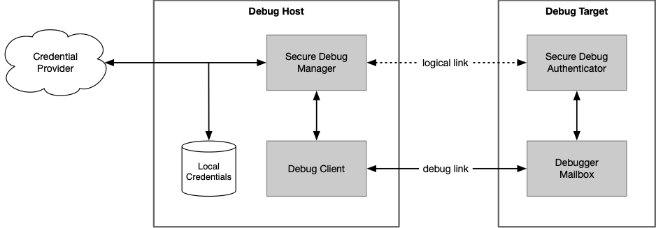

- Generated by
 1.8.20
1.8.20
|
Secure Debug Manager
0.1
|
This repository contains the API definition for the Secure Debug Manager.
A very abstract system architecture for secure debug is shown below. The Secure Debug Manager (SDM) is the host-side component that implements a secure debug protocol.

The Debug Client is the process that wishes to debug a locked target. Usually this would be an IDE or standalone debugger used by a developer or technician, but can be any sort of tool that needs debug access to the target. The SDM is used by the Debug Client to securely unlock debug access.
The requirements for the Secure Debug Manager API are as follows:
The SDM API is being defined so tools can support a variety of secure debug implementations with a single API. Tools vendors are encouraged to standardize on this API in order to ease the support burden on silicon and software providers, as well as themselves, and provide simple and easy to use integration of secure debug for users.
The goal is for silicon or software vendors to be able to provide an implementation of the API as a shared library that would be included with tools as part of device support. The SDM library will likely also be included in CMSIS Device Family Packs.
The SDM API is designed to be debug architecture agnostic, so it can be used on debug architectures other than Arm ADI. However, a given implementation of the API will naturally support only those debug architectures for which it was written.
The SDM API will support any secure debug protocol. A reference implementation will be provided for the PSA Authenticated Debug Access Control (PSA ADAC) protocol. As part of this reference implementation, additional lower-level APIs are planned be defined for layers such as a credential provider and debug mailbox interface.
The main secure_debug_manager.h header file is located in the [include/](include) directory.
A doxygen configuration file is available to generate documentation for the API.
An XML manifest file will be included with the SDM shared library. The included xml/manifest.xml file is an example manifest for experimentation.
The manifest serves several purposes:
Eventually a proper schema will be created for the manifest.
The overall structure for the API is well defined; some details are very much in progress. All feedback is appreciated.
Remaining tasks are collected in the `todo.md` file.
PSA ADAC related lower-level APIs are not yet defined.
The files are covered by the BSD 3-Clause license. However, this repository is currently considered confidential and is only accessible under NDA.
Copyright © 2020 Arm Ltd.